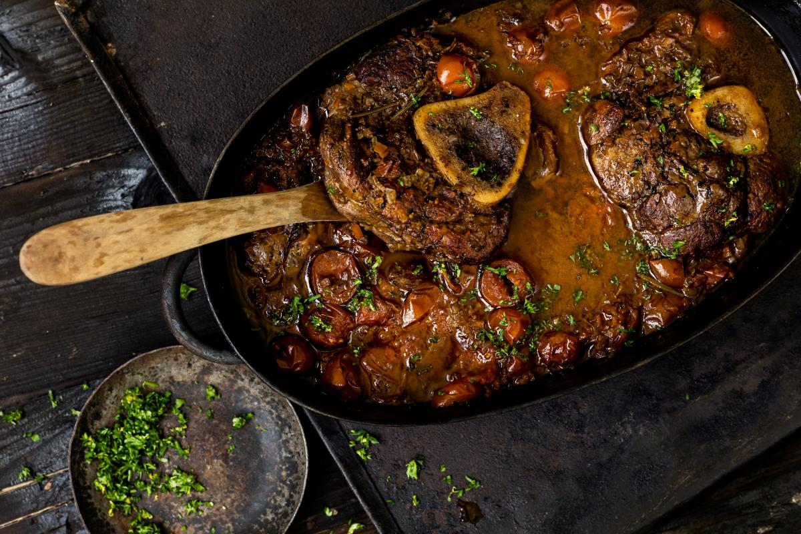

Home
Ossobuco

Ossobuco garnished with coriander
Ossobuco is a dish made from braised shanks, which till recently were variety cuts associated with poverty. Originally Italian, it was typically made with veal. The dish has since crossed borders to be a delectable meal across many western households. It has even found its place in high end restaurants, increasing demand, and driving the prices of beef shank up. As a result, it is no longer the go to sunday casserole, making it a special meal.
This recipe calls for a braising the meat, preferably in a slow cooker or casserole to concentrate flavour. It is often served with rice, ugali, chapati or any carbohydrate of choice.
Ingredients
- 6 (i inch) slices of beef shank
- 2 tablespoons butter
- 2 table spoons cooking oil
- 2 roughly chopped onions
- 2 chopped large carrots
- 2 chopped celery stalks
- 2 thinly sliced garlic cloves
- 1 1/4 cups beef/chicken stock
- 3 large diced tomatoes
- 1 bay leaf
- 3 finely chopped coriander
- salt and pepper to taste
Steps
- Season the beef shank slices with salt and pepper until evenly coated. Melt the butter and oil in a large skillet over medium heat. Cook the shank slices in the hot butter until golden brown on all sides, about 10 minutes per side.
- Add the onions, carrots, celery, and garlic in a large slow cooker. Set the meat slices atop the vegetables, then pour in the beef stock and diced tomatoes. Season with oregano and the bay leaf.
- Cook on Low for 8 hours until the meat is falling off of the bone. Season to taste with salt and pepper before serving.
- Garnish with chopped coriander to add that oumph!